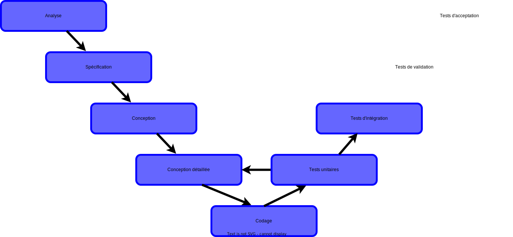
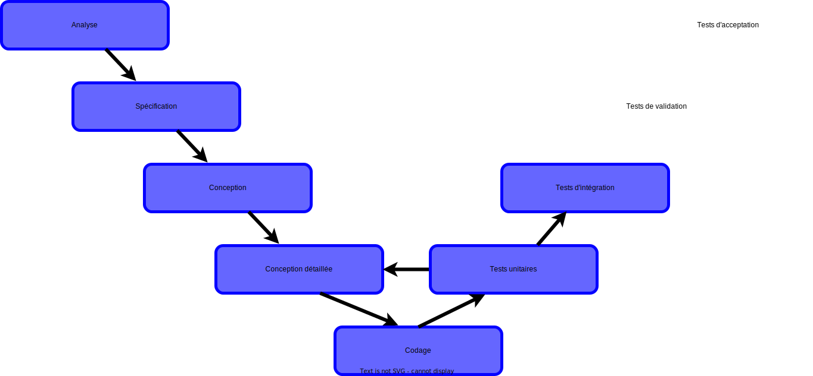

Qualité de développement
Diagramme UML d'activités
2A - Bachelor Universitaire de Technologie
IUT d'Orsay - Université Paris-Saclay - 2023/2024
IUT d'Orsay - Université Paris-Saclay - 2023/2024

Cycle de développement


 



Pourquoi un diagramme d'activité
- Diagrammes de cas d’utilisation
- Utiles pour la discussion avec le client (intuitifs et concis)
- Pas suffisant pour l'équipe de développement
- Descriptions textuelles
- Absence de vision globale des actions décrites dans les scénarios
- Que faire ?
- Les diagrammes d’activité représentent une alternative visuelle.
Pourquoi un diagramme d'activité
L'objectif du diagramme d’activité est de décrire graphiquement
le comportement d’un système sous formes d’actions ordonnées.
Activité et actions
- Une activité représente un scénario qui peut être décrit
par un ensemble d'actions. - Une action représente une étape simple de l’activité.
Interfaces d'activité
Les interfaces d’activité représentent les différents
flux traversant une activité
Interfaces d'activité
Flux de contrôle
- Flux de contrôle : représente explicitement
un contrôle
passant
d’une activité (ou d’une action) à la suivante (définition d’un ordre).
Interfaces d'activité
Flux d’objets
- Flux d’objets modélise :
- l’envoie de données (objets) à plusieurs destinataires (multicast),
- la selection (satisfaire un test),
- la transformation (extraire une partie de la donnée).
Nœuds d'activité
Nœud initial
- Nœud initial : constitue le point de départ d’une activité
(une activité peut posséder plusieurs nœuds initiaux).
Nœuds d'activité
Nœuds d’objets
- Nœuds d’objets : représentent
les données complexes parcourant
un diagramme d’activités.
Nœuds d'activité
Nœud final
-
Nœud final :
permet de mettre fin à toute l’activité
(une activité peut posséder plusieurs nœuds finaux).
Nœuds d'activité
Nœud décisionnel et Nœud de confluence
- Nœud décisionnel : permet de choisir un flux de sortie en fonction d’une expression booléenne.
- Nœud de confluence : permet de rassembler différents flux au sein d’un même flux de sortie
Nœuds d'activité
Nœud fourches et Nœud de jonction
- Nœud fourches :
permet de scinder le flux courant au sein
d’une activité en plusieurs flux concurrentiels. - Nœud de jonction :
permet de synchroniser plusieurs flots
d’une activité et de les réunir au sein d’un même flot.
Nœuds d'activité
Nœud final de flux
- Nœud final de flux : permet de mettre fin à un chemin partiel d’exécution dans une activité.

Modélisation avancée d’une activité
-
Partitions d’activité : permet d’indiquer qui est
responsable
d’une ou d’un ensemble d’actions dans une activité.
Exemple